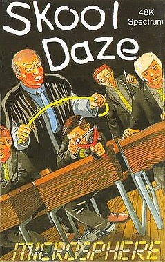
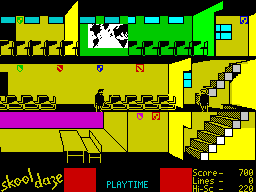
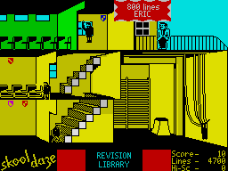

Skool Daze


{kind=link}

| Publisher: | Microsphere |
| Price: | £5.95 |
| Year: | 1984 |
| Source: | CRASH, Issue 11 |

Skool Daze is the best daze of your life and if the gratuitous violence possible in this extraordinary new game is anything to go by, it is probably best to go through them all in a daze! The nefarious hero (or is he an anti-hero) of this piece is called Eric, although the program allows you to input a new name if you prefer to personalise your software, and you can change the names of the other ‘actors’ in this play. ‘Play’ and ‘actors’ are apt words in this game, for it carries on its own life regardless of what you are doing, in fact the demo alone is like watching ‘Grange Hill’ on the telly!

The simple object of Skool Daze is to get the end of term report out of the headmaster’s safe, so suppressing the appalling information contained in it. However, achieving this aim is not so simple. In essence, to get the safe combination code, you must set all the school shields hanging on the walls flashing. You do this by hitting them with your catapult. Once they are all flashing, you must extract the code letters from the teachers, each one of which has been entrusted with one letter. This is done by knocking them over. All except the history master who, because of his advanced age, has had his code letter implanted in his brain by hypnosis.
The methods to be used to set shields flashing, knock over teachers and extract the information are very varied, and typically school-like. But even with the codes, all is not over, because Eric must try out all the combinations on a blackboard. And even with the safe accessed safely, Eric must then cover his tracks by stopping all the shields from flashing by the same method he used to start them.
This may all sound involved and fun, and it is, but the bare bones of the plot don’t even begin to explain how hard the task is made by the ants nest building of a school! It swarms with kids and teachers, the former milling innocently around, bopping each other in the eyes, scrawling rude messages on the blackboard, tripping up masters and generally causing havoc to Eric’s endeavours; the latter handing out lines, ringing bells to change classes, asking daft educational questions, and generally being just like school teachers. Quite honestly, the Department of Education should have this game suppressed before it really causes trouble...
CRITICISM

‘Skool Daze takes me back a bit, to the good old days — school days. This incredible 3D school time game has many features associated with school, such as ‘Whacker’ — the teacher that is out to get you with his cane. The object of the game is quite easy although achieving the objective is very difficult, and this seems to add very well to the playability of the game. Among the many things I like, two things that stand out are — the catapult action, where your missile if fired at the back of someone’s head, promptly knocks that person down, with the victim scratching his head — and the fact that there is no character disruption when the figures pass in front of the background. Colour, sound and the general idea are all exceptionally good. I think this will provide many hours of joyful skool daze.’
‘Skool Daze is a fun game to play. The graphics are excellent and the sound is good. You are set an enormous task, which I have only just started. Most of the shields are much too high to reach, and all the teachers are line-happy. When ever you do anything and there is a teacher near you, the teacher will shout remarks at you. I really enjoyed playing this game and recommend it to everyone with a sense of mischief.’
‘From the moment you see Skool Daze, you fall in love with it, because the graphics are tremendous. The whole playing area is alive with action. The cast of characters is presented in a long menu which introduces each recognisable graphic, tells you who they are and their names and allows you to change them if you want. The game has the feeling of an animated comic strip with the teachers’ and pupils’ comments all appearing in balloons. Playing the game requires a lot of attention to keep up with everything that is going on, and even if you don’t feel up to a day at school, you can always sit back and watch it happen around you on the excellent demo. Microsphere seem to have a knack of finding unusual themes for games, and this is no exception. They also find the great graphics to go with it. I can’t imagine anyone being disappointed with Skool Daze.’
COMMENTS
| Control keys: | Cursors or Q/A up/down, O/P left/right, plus; S for sit/stand, H for hit, W for write, J/L jump/leap and O or F for fire |
| Joystick: | Kempston, Protek, Sinclair 2 |
| Keyboard play: | Very responsive |
| Use of colour: | Very good |
| Graphics: | Excellent — it seems an inadequate word |
| Sound: | Very good, good tune |
| Skill levels: | 1 |
| Lives: | 1 |
| Screens: | Scrolling school building |
| Special features: | Masked character graphics |
| General rating: | Excellent value, plenty to do, addictive, unusual. |
| Use of computer: | 92% |
| Graphics: | 93% |
| Playability: | 95% |
| Getting started: | 93% |
| Addictive qualities: | 94% |
| Value for money: | 94% |
| Overall: | 93% |